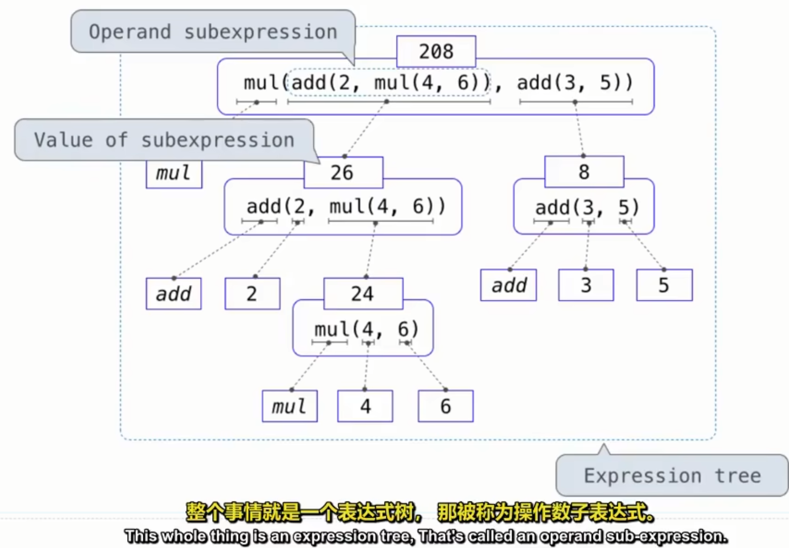
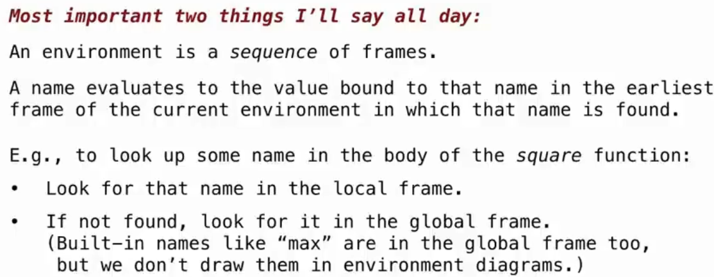
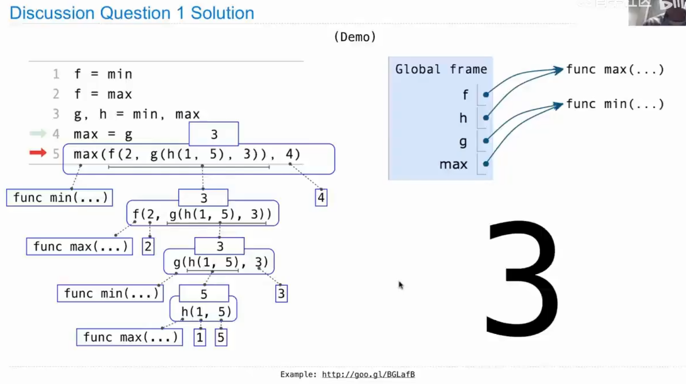
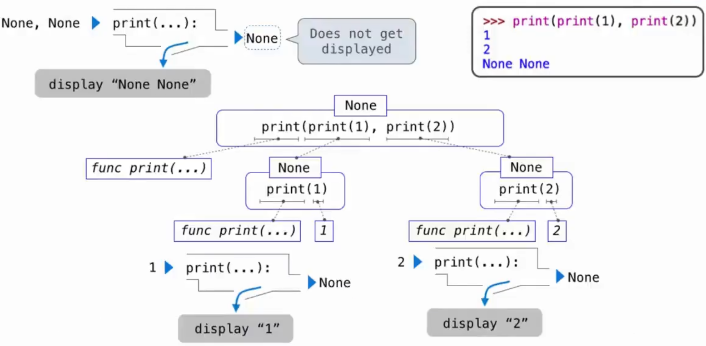
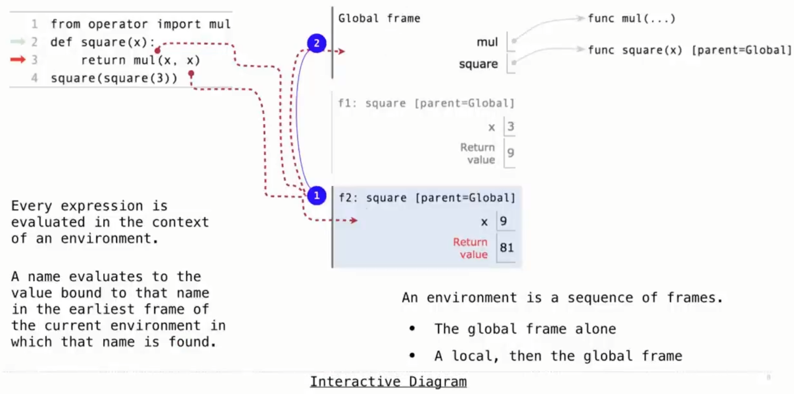
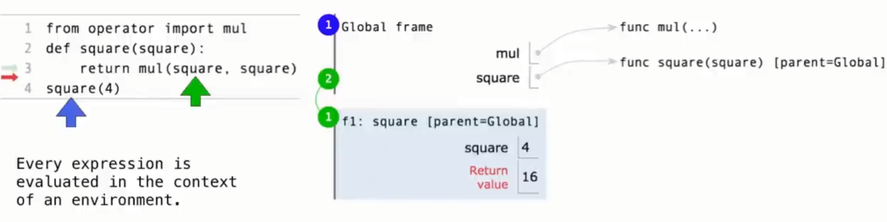
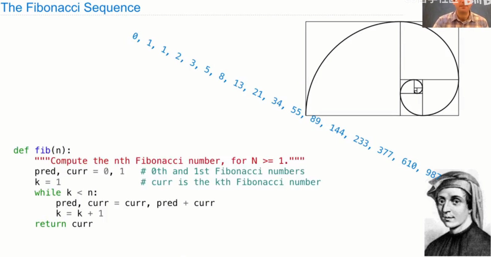
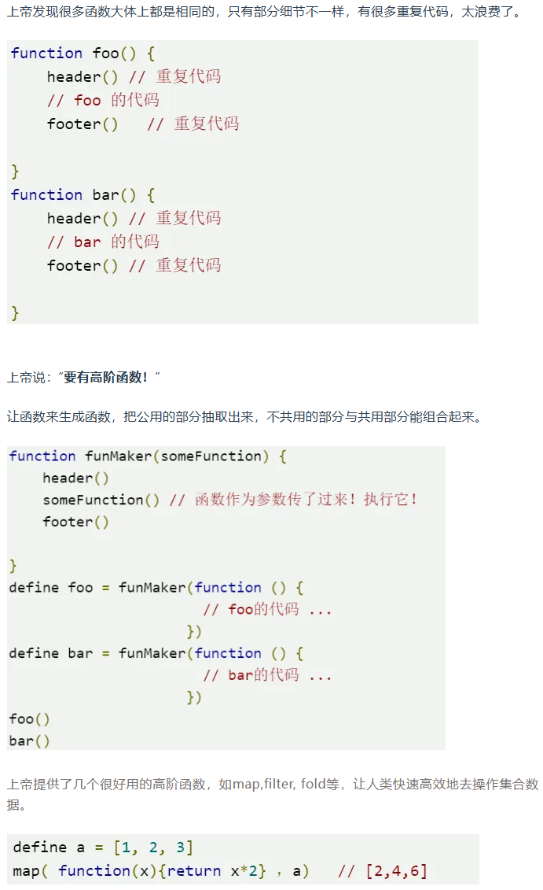

CS61A笔记
Expression Tree

Functions
python和C#的最大区别就是
|
|
函数是python这门语言的第一类对象
第一类对象（First-Class Objects）是指在编程语言中，可以像其他数据类型一样操作的对象，具备以下特性：
-
可以赋值给变量：你可以将它们赋值给一个变量。
f=max -
可以作为参数传递给函数：你可以将它们作为参数传递给函数。
1 2 3 4>>> def output_f(f): ... return f(1,2,3) >>> output_f(f) 3 -
可以作为返回值从函数返回：你可以将它们作为函数的返回值。
1 2 3 4>>> def get_f(): ... return f >>> get_f()(1,2,3) 3 -
可以存储在数据结构中：你可以将它们存储在数组、列表、字典等数据结构中。
f_list = [f,f]
而在C#中，类和对象则是第一类对象,或者在有类的语言中这么说怪怪的，也许可以叫第一个公民
|
|
|
|
|
|

一个环境是一系列的帧
一个帧是名称和值之间的绑定，在环境图中的一个方框，一个环境是这些帧的序列，可以是本地帧，后面跟着全局帧，一个名称，在求职时，会得到绑定到该名称的值，是在当前环境中该名称被发现的最早的帧中的值
如上面的那个例子，在执行f(2)的时候，先在方形函数的主题中查找某个名称，首先在本地帧中查找，找到f，将其绑定到2上，如果找不到，就在全局环境中找，发现mul在全局中对应的函数，然后传入f的值2进行操作，返回4，然后f(2)返回4。





|
|
因为在定义函数的时候，函数主体是不会被计算或者说执行的，if-else的模式确保了当x为负数的时候你不会去计算它的平方根，**但是!**当sqrt(x)定义在参数里的话就不一样了，调用表达式不允许你跳过对调用表达式的部分进行评估，你会先计算x>=0,sqrt(x)和0，然后自然而然的抛异常报错。
这种将所有分支选项写在参数里的做法实际上相当于在执行的时候都执行了一遍
Higher-Order Functions
高阶函数实际上就像是OOP中的继承一样，为了解决代码复用的问题，如下图所示

但是要注意的是，高阶函数主要注重的是行为的复用，而不像是OOP一样，通过对象继承了状态
现在是具体的例子:
|
|
这里引用一段翻译过后的书中原文:
这个例子说明了计算机科学中两个相关的重要思想：首先，命名和函数使我们能将大量的复杂事物进行抽象。虽然每个函数定义都很简单，但我们的求解程序触发的计算过程非常复杂。其次，正是由于我们对 Python 语言有一个极其通用的求解过程，小的组件才能组合成复杂的程序。理解这解释程序的求解过程会有便于我们验证和检查我们创建的程序。
这里的两个概念就涉及到了在编程中最经常遇到的两个问题:命名和顺序，起名字代表你思考好了这个函数或者这个变量的抽象，它代表的是什么东西，它会起到什么作用，理逻辑代表了你想清楚了你要如何使用你定义好的这些函数才能实现你想要的功能。
Data Abstraction
将逻辑抽象成行为和方法，然后定义数据类型或者结构
在抽象定义方法的时候，有一个抽象屏障原则，即只抽象一层，下一层的抽象由下一层的方法去做，比如:
计算两个分数的乘法，就应该是mul(x,y)处理两个数的乘法和ralation(x)处理一个分数或者返回一个分数的方法的组合，而不是定义一个方法，这个方法直接处理两个特定格式的数据，它们是分数，然后做乘法。